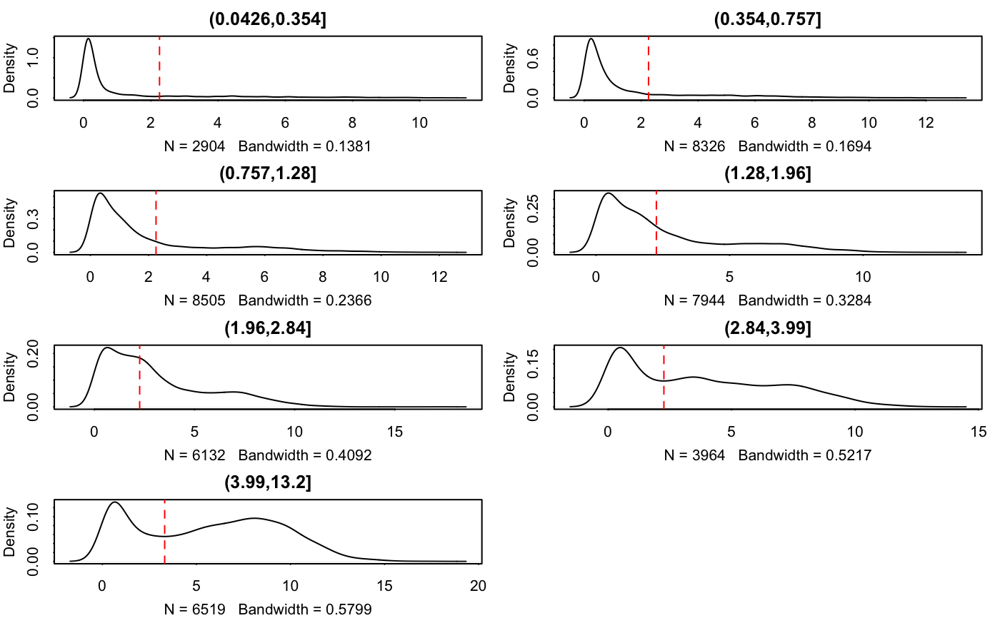

R/thresholdSCRNA.R
thresholdSCRNACountMatrix.RdAn adaptive threshold is calculated from the conditional mean of expression, based on 10 bins of the genes with similar expression levels. Thresholds are chosen by estimating cutpoints in the bimodal density estimates of the binned data. These density estimates currently exclude the zeros due to complications with how the bandwidth is selected. (If the bandwith is too small, then extra peaks/modes are found and everything goes haywire). If the diagnostic plots don't reveal any bimodal bins, this is probably the reason, and you may not need to threshold since background in the data are exact zeros.
thresholdSCRNACountMatrix(data_all, conditions = NULL, cutbins = NULL, nbins = 10, bin_by = "median", qt = 0.975, min_per_bin = 50, absolute_min = 0, data_log = TRUE, adj = 1)
| data_all |
|
|---|---|
| conditions | Bins are be determined per gene and per condition. Typically contrasts of interest should be specified. |
| cutbins |
|
| nbins |
|
| bin_by |
|
| qt | when |
| min_per_bin | minimum number of genes within a bin |
| absolute_min |
|
| data_log | is |
| adj | bandwith adjustment, passed to |
list of thresholded counts (on natural scale), thresholds, bins, densities estimated on each bin, and the original data
data(maits,package='MAST', envir = environment()) sca <- FromMatrix(t(maits$expressionmat[,1:1000]), maits$cdat, maits$fdat[1:1000,])#>tt <- thresholdSCRNACountMatrix(assay(sca))#> (0.0426,0.354] (0.354,0.757] (0.757,1.28] (1.28,1.96] (1.96,2.84] #> 2.258200 2.258200 2.258200 2.258200 2.258200 #> (2.84,3.99] (3.99,13.2] #> 2.258200 3.313588tt <- thresholdSCRNACountMatrix(2^assay(sca)-1, data_log=FALSE)#> (0.0426,0.354] (0.354,0.757] (0.757,1.28] (1.28,1.96] (1.96,2.84] #> 2.258200 2.258200 2.258200 2.258200 2.258200 #> (2.84,3.99] (3.99,13.2] #> 2.258200 3.313588opar <- par() on.exit(par(opar))#> Warning: graphical parameter "cin" cannot be set#> Warning: graphical parameter "cra" cannot be set#> Warning: graphical parameter "csi" cannot be set#> Warning: graphical parameter "cxy" cannot be set#> Warning: graphical parameter "din" cannot be set#> Warning: graphical parameter "page" cannot be setpar(mfrow=c(4,2)) plot(tt)